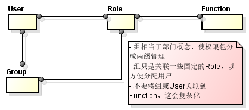
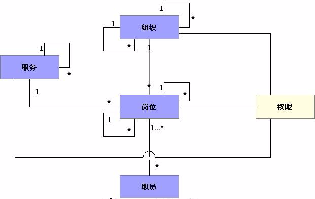
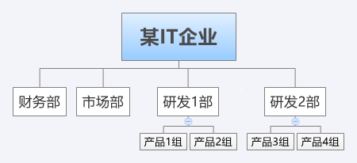

各行各业中企业的管理方式千差万别、且纷繁复杂，权限管理设计往往迷失在这种复杂的关系中。而由于企业所在行业和管理方式差别，导致不可能拥有一个统一的模型能满足所有企业的权限管理需求。处理企业特殊的复杂的行政管理关系、建立理想权限模型方式是以RBAC模型为基础，在其上面作一些扩展来实现。这种方式的难点是理清行政管理关系不容易，理不清则建立权限模型也会不合理。
这篇文章对RBAC权限模型描述的比较清楚： RBAC权限管理模型：基本模型及角色模型解析及举例 。
RBAC权限管理模型有四种，分别是RBAC0，RBAC1，RBAC2，RBAC3。它们的区别是 RBAC1有继承关系，RBAC2 对用户、角色和权限三者之间增加了一些限制，RBAC3=RBAC1+RBAC2。
最常用的是RBAC0，其次是RBAC1。现实业务中除了有特殊的要求，否则最好前两种基础上进行扩展，例如：增加Group支持。

RBAC是一个理想的模型，而企业的组织机构和管理方式各不相同，必须把RBAC模型和企业组织模型抽象融合在一起，才能适应企业业务需求。 这篇文章对非矩阵型结构的企业的权限模型做了详细描述：统一权限管理与组织机构的结合（缩水版）
岗位的层次表明了不仅在某个组织下的岗位有层次，实际所有岗位组成一颗完整的岗位树，都是树状层次结构中的节点。这是由于每个岗位都有直接上级，也就是他汇报工作的对象。
给部门分配权限和给岗位分配权限是有区别的。由于用户必须隶属于岗位，而岗位隶属于部门，部门的权限用户是不能继承的，部门的权限用来影响岗位权限。部门内的岗位权限不可超出部门权限，并且部门权限可分为通用权限（部门内岗位可自动继承）和特定权限（必须分配到具体岗位）。这样也可以实现分级的权限管理，由总管理员给部门分配权限，然后各部门管理员 给本部门岗位分配权限。类似的我们也可以给职务分配权限，职务的权限将自动被关联此职务的岗位获得。
在 基于角色的权限模型中，我们给角色分配权限，给用户分配角色，而在组织模型中，我们也需要给组织和岗位分配权限，给用户分配岗位，对比可发现两个模型结合的关键就在岗位和角色的关系上。处理岗位和角色的关系有合并和映射两种方法。
由于大部分的角色就是基于实际的岗位或者职务生成的，因此可以将岗位和角色合而为 一，用组织模型的岗位同时表示权限模型的角色概念，直接给岗位、组织、职务分配权限。

问题： 如下图所示的组织结构，在流程引擎中配置一个同时适用于研发1、2部请假审批流程，流程需要研发部门经理审批， 如果 该审批人设置成某一个部门经理的Role（表示岗位），那么流程只能用于其中这个部门。而另一个部门必须再配置一个同样的流程。流程一样而不能复用，这是不合理的。

解决办法 方法一、将参与者设置成职务，列出该职务对应的岗位负责人，让用户选择审批人。 方法二、将参与者设置成职务，通过计算请假人所在部门，通过部门在程序中自动确定审批人。
所以，是否可以采用如下设计（不一定合理）：一种更灵活方式是，将Role映射到职务，在控制资源、菜单分配权限时，完全满足需求。当涉及到数据权限时（如：研发1部只能看1部的数据），可以将职务结合人员、数据的所属部门来控制权限。
问题： - 用户如何只查看本部门的数据？ - 用户如何查看跨部门的数据？
方案： 所谓简单数据权限管理是满足各个部门人员只能操作本部门的数据，只有在授权的情况下才能操作其他部门的数据。 资源权限的控制方式是给资源加上标识，将此标识分配给Role，然后将Role分配给User，实现权限控制。（resource->role-user） 简单的数据权限控制亦可以借鉴这种方式，为每一条数据加上标识（部门Id），将此标识分配给Role，从而实现数据资源控制；同时，由于此标识是部门Id，直接可以通过User的部门Id来判断是否有操作数据的权限。
待解决的问题： - 除了数据权限外，如何控制有效期限、可用额度、适用品种等等。
可参考附件《基于RBAC的用户权限管理的设计与实现》
多系统统一权限管理需要解决的问题： - 建立统一的组织机构、人员、用户的管理 - 提供统一的多系统、多终端的单点登录入口 - 提供统一的授权管理，即各系统不提供授权管理，有统一授权平台来授权 - 提供统一的权限校验方式 - 支持分级授权
可参考附件：《医院信息系统分级授权管理机制的研究和设计》
根据自己项目的经验，有两点建议吧： 1、实时跨系统校验不是一个好的方案，最好在各业务子系统做授权信息的缓存，由统一权限中心往各业务系统推送权限信息，子系统通过统一权限中心服务提供的jar包来管理缓存以及进行访问认证。这样权限系统服务响应慢或者不可用，或者升级等不会影响下游子系统的稳定运行。